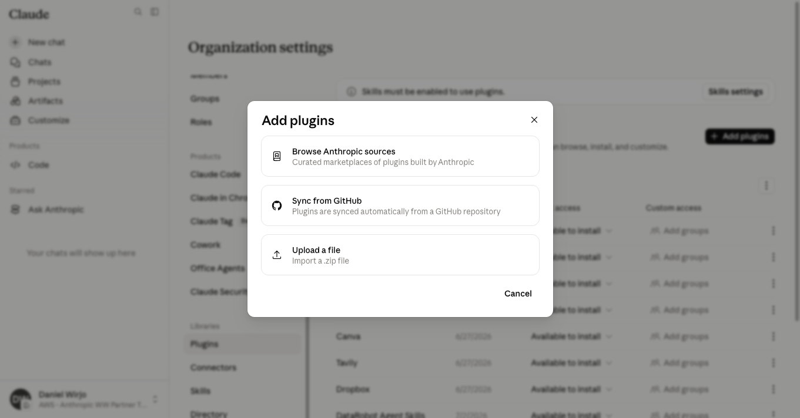
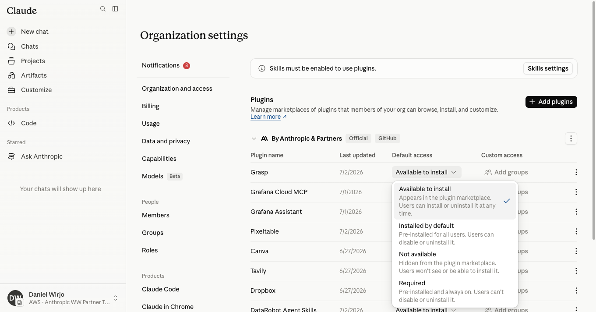
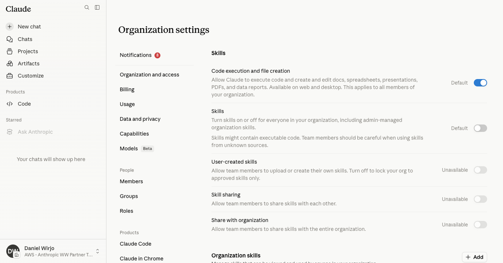
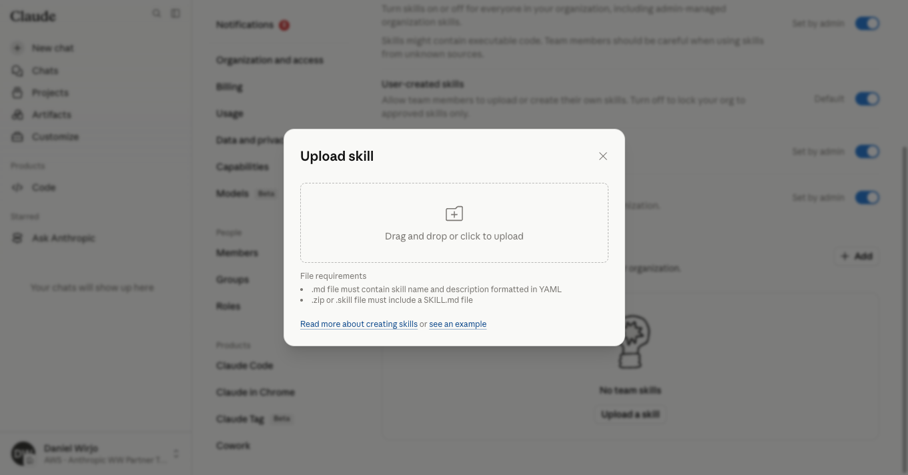
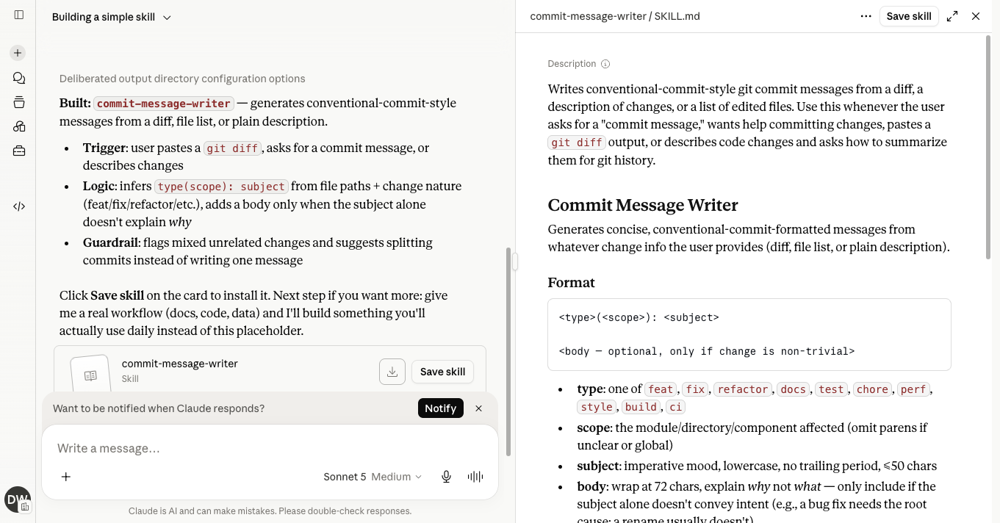
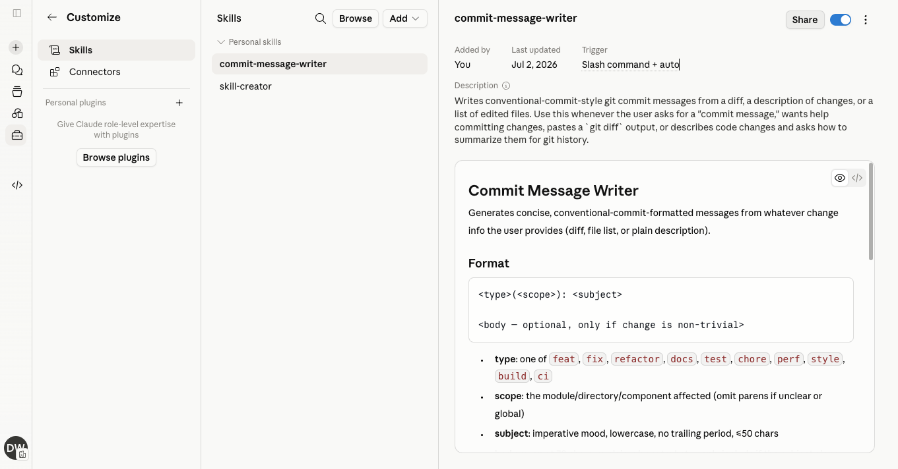
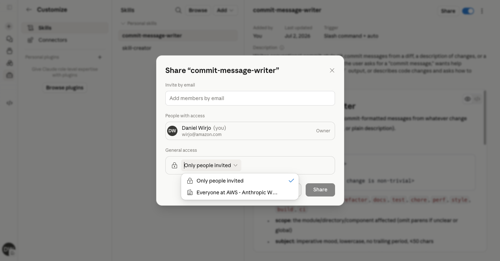
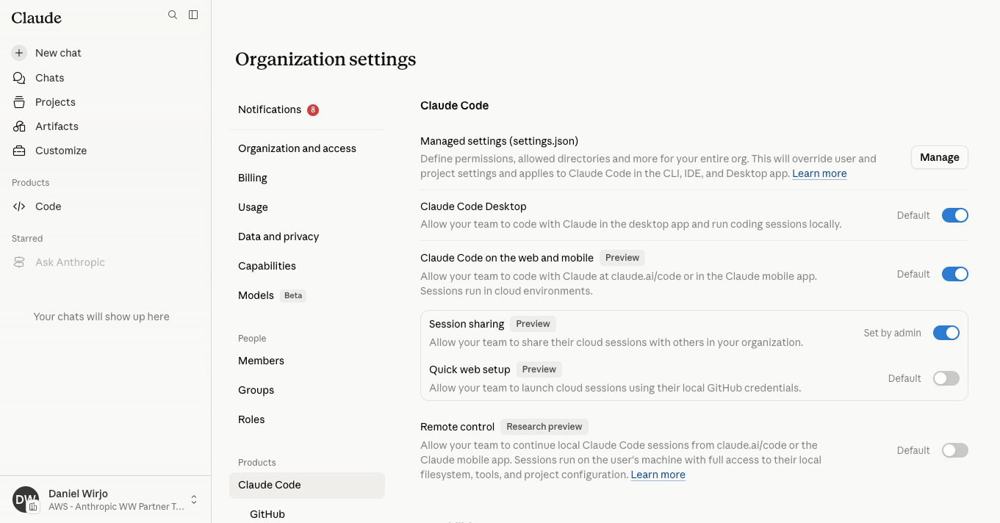

Controlling skill and plugin distribution
Role-based access with fine-grained permissioning to manage what gets installed, by whom, and enforce organizational standards
How do we enable teams without losing control?
What teams want
Discover and connect integrations to Claude — gaining deep context about their work across project histories, task statuses, and organizational knowledge
What admins need
Admin controls for remote and local connectors, audit logs for compliance monitoring, and the ability to prevent unapproved third-party installs
Claude Enterprise delivers both — role-based access with fine-grained permissioning at the organization level
Three governance areas
Plugins
Third-party integrations that connect Claude to external tools and services (e.g. Jira, GitHub, Confluence). Admins control which plugins are visible, installable, or mandatory — with per-team overrides.
Skills
Reusable prompt instructions that teach Claude how to perform specific tasks (e.g. "Write a PRD", "Review code in our style"). Admins control who can create, share, and deploy skills organization-wide.
Claude Code
The agentic coding tool for terminal and IDE. Admins control desktop access, web access, session sharing, and feature capabilities like fast mode and routines.
Plugin governance
Control which integrations are available, who can install them, and enforce compliance requirements across your organization
Four access levels per plugin
Not available
Hidden from the plugin marketplace. Users won't see or be able to install it. Use this to block unapproved third-party plugins.
Available to install
Appears in the plugin marketplace. Users can install or uninstall it at any time. Good for approved-but-optional tools.
Installed by default
Pre-installed for all users. Users can disable or uninstall it. Ideal for recommended productivity tools.
Required
Pre-installed and always on. Users can't disable or uninstall it. Use for compliance and security plugins.
Plus: custom group access lets you assign different policies per team or department
Three ways to add plugins to your organization
Browse Anthropic sources
Curated marketplaces of plugins built by Anthropic and partners
Sync from GitHub
Plugins synced automatically from a GitHub repository — requires the GitHub connector to be enabled in Admin settings first
Upload a file
Import a .zip file for custom internal plugins


Skills governance
Manage how skills are created, shared, and deployed — from individual user skills to organization-wide approved skill libraries
Organization-wide skills deployment controls
Code execution and file creation
Allow skills to run code and create files
Skills
Master toggle — admins must enable before users can access skills
User-created skills
Whether users can package their own expertise into custom skills
Skill sharing
Whether skills can be shared between individual users
Share with organization
Whether skills can be deployed organization-wide

Deploy curated skills across your organization
Admins can upload approved skills that are available to all organization members — packaging expertise so Claude becomes a specialist on what matters most to your teams.
Key control
Only admins can add organization skills. With "User-created skills" disabled, users cannot create or install their own — they can only use what the admin has approved.

How end-users create and share skills

1. Users build skills in chat

2. Skills appear under Personal skills

3. Share with individuals or entire org
What admins control
Disable "User-created skills" to block step 1. Disable "Skill sharing" to hide the Share toggle and Copy link in step 3. Disable "Share with organization" to remove the "Everyone at [org]" option. Users will only see admin-approved organization skills.
Product-level controls
Access controls
Enable or disable Claude Code Desktop, web access, session sharing, and quick web setup per organization
Capability toggles
Fast mode, routines, artifacts, dynamic workflows, and channels — each independently controllable
Analytics and oversight
Claude Code analytics and GitHub analytics for visibility into usage patterns

Enterprise governance best practices
01
Start restrictive, open gradually
Begin with Skills disabled and plugins set to "Not available." Whitelist approved integrations after security review.
02
Use group-based access
Assign custom access per team with fine-grained permissioning — engineering gets Buildkite, design gets Canva.
03
Enforce compliance plugins as "Required"
For security and compliance tools your organization mandates, use "Required" so users cannot disable or uninstall them.
04
Disable user-created skills initially
Prevent users from installing arbitrary third-party skills from GitHub. Enable only once you have established a review and approval process.
Full admin control over skills and plugins
Plugins — manage marketplaces with four access levels and per-group overrides
Skills — control creation, sharing, and organization-wide deployment with master toggles
Claude Code — enterprise deployment controls for access, capabilities, and analytics
Claude Enterprise admin console: claude.ai/admin-settings